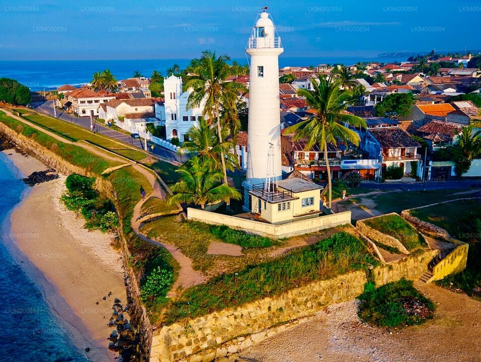
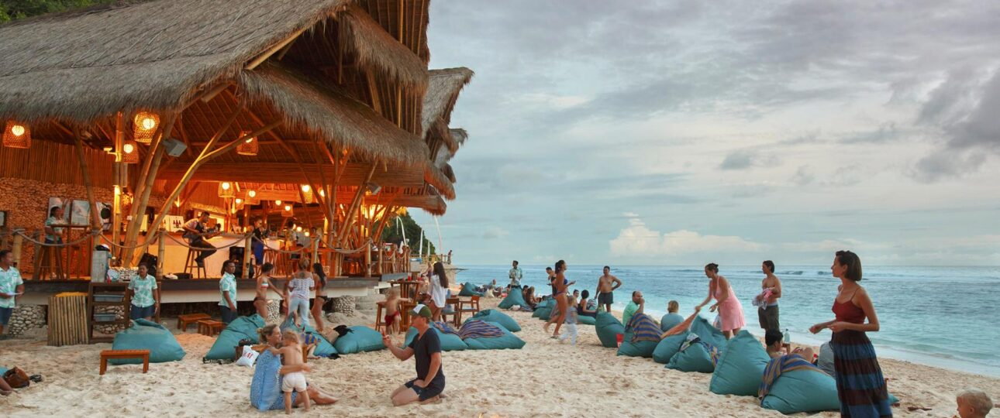
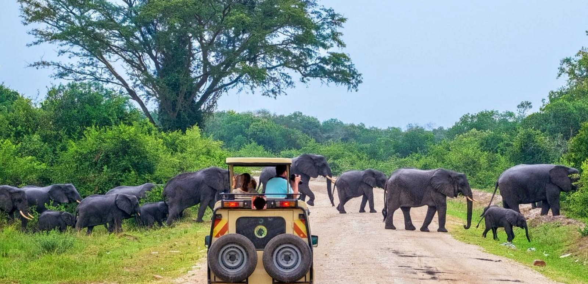
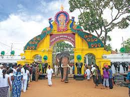
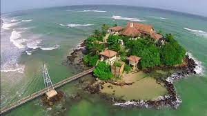

Galle Dutch Fort
Built several years ago on a massive piece of land in Galle, the Galle Dutch Fort was used by the Portuguese until the Dutch took over it. The British finally sealed the fort as theirs with a lot of re-building and renovation. The unique blends that led to the standing of this monumental structure are now listed under the UNESCO World Heritage Sites thus deserving a substantial place on the list of places to visit in Galle.
Koggala Beach

Amongst the many beaches in Sri Lanka, Koggala Beach has become a secret favourite for the tourists
owing to this coastline’s spectacular view. Not only is it a great place to unwind and rejuvenate as
you listen to the waves hug the sand every few seconds, but it is also a fun place to get some
surfing lessons, and walk to the Koggala Lake.
The beach is so beautiful, that many prefer staying at one of the beach hotels or resorts. You
should try your hands on some local delicacies when you take a break from relaxing!
Unawatuna Beach
A beach with golden sand that complements the clear ocean waves is surely one of the places to visit in Galle during your trip. Lying in the southern region of Sri Lanka, Unawatuna Beach is one of the most famous spots amongst tourists for swimming, walking and relaxing. One can also rent some sunbeds to take the day off from the world and just lay still as you oversee the vast sea. This beach is surrounded by a lot of eateries that surely put a fine cap on a well-spent day. Canoeing is a great pastime on this beach.
Yala National Park
Yala National Park is the second largest national park in Sri Lanka and is one of the most visited national parks in the country. There are 32 recorded species of reptiles and various kinds of birds. It gives the tourist a chance to witness the diverse wildlife of Sri-Lanka.
Sithulpawwa Buddhist Monastery

It is also one of the ancient Buddhist monasteries. The panoramic view from the monastery is absolutely breathtaking. It is a religious place with archaeological significance dated to be centuries old. The mere journey to this place is filled with excitement as one gets see elephants and other wild animals on their way.
Kataragama
Kataragama is a sacred town for pilgrimage and a very famous religious place. It is one of the most sacred places in the country with a serene and calm environment. It attracts a lot of tourists every year who come to see the holy place and pay their respect to the deities. Other than marveling at the breathtaking architecture, it also draws peace-seekers since the place has very soothing vibes that are sure to calm and revitalize your senses.
Matara Paravi Duwa Temple
Situated on a small island. Matara Paravai Duwa Temple is a Buddhist temple that is as scenic as it is peaceful. Surrounded by the ocean, Matara Paravi Duwa Temple is home to Buddhist monks and ideal for soul seeking. You may find monks crossing the bridge and going inside the temple. You are requested to maintain silence and decorum at all times during your visit. The sound of crashing waves feels like a piece of meditative music to the ears. If you want to get away from all the hustle-bustle and flee to tranquil surroundings, then you should come to this place.
Polhena Beach

The beaches in Matara are not very touristy. However, the Polhena Beach stands as an exception to the rule. The Polhena Beach may be hard to access, but it is worth all the navigation. Situated at a distance of 2 kilometers from the Matara City Center, the Polhena Beach has calm waters calling out visitors for a swim. The offshore coral reefs break the waves offering a serene sandy cove along the coast. Due to the romantic atmosphere of Polhena Beach, it enjoys the position of a popular honeymoon destination. It also acts as a weekend getaway for the locals.